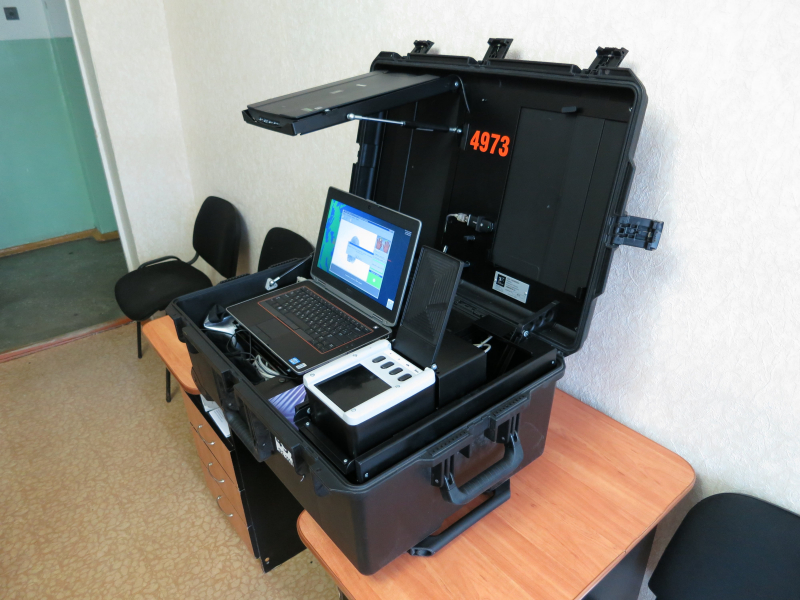

Состав данных:
•Оттиски пальцев •Текстовая информация •Фотоизображение лица •Рисунок радужной оболочки глаз
Источники ввода данных:
•Дактилоскопические сканеры; •ФК-3, web-камеры, цифровые фотоаппараты; •Сканер радужной оболочки глаз Циркон 
Форматы экспорта:
Экспорт в сторонние системы не предусмотрен. Передача данных для поисков ведётся в формате Папилон.
Соответствия:
•FBI WSQ-компрессия изображений (сжатие дактилоскопических изображений без заметной потери качества, максимальное сжатие – 1:15) •FBI «IAFIS IQS»: CJIS-TD-0110 и CJIS-RS-0010 (качество изображений, снимаемых с дактилоскопических сканеров, соответствует спецификации ФБР) •Дактилоскопия ГОСТ Р 58298-2018, ИСО/МЭК 19794-2 и 19794-4 (формат обмена биометрическими данными соответствует национальному стандарту РФ) •Лицо анфас ИСО/МЭК 19794-5 (формат обмена биометрическими данными соответствует национальному стандарту РФ) •Входит в реестр российского ПО
Рекомендуемые системные требования:
Операционная система: •Windows 7 (32bit) •Windows 8 (32/64 bit) •Windows 10 (32/64 bit) •RHEL/CentOS 6x (64 bit) •RHEL/CentOS 7x (64 bit) •Astra Linux 1.5 (64 bit) •Astra Linux 1.6 (64 bit)